餐飲主案例
燒肉餐廳
從外觀、座位、櫃台、取餐區到餐桌情境，完整呈現餐飲品牌的空間氛圍與消費體驗。
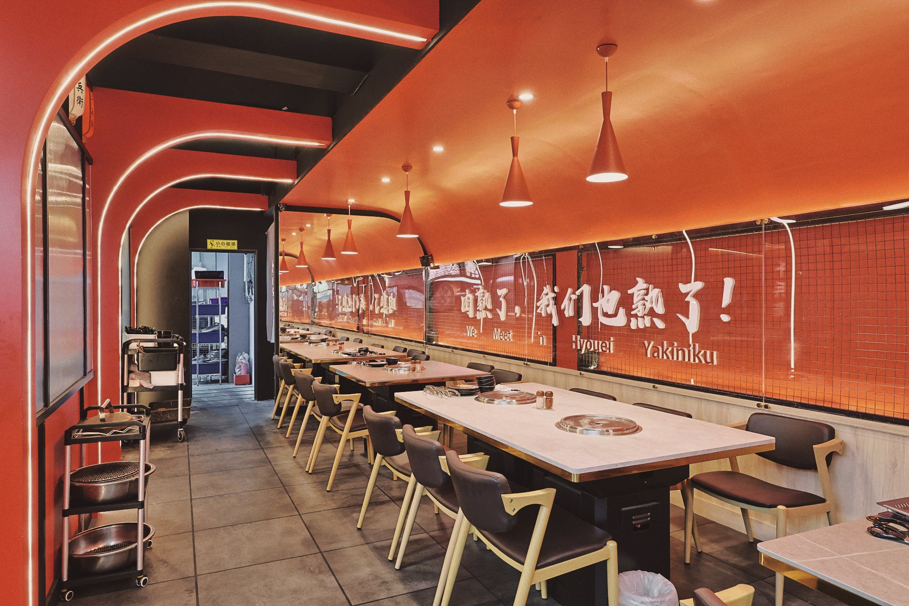
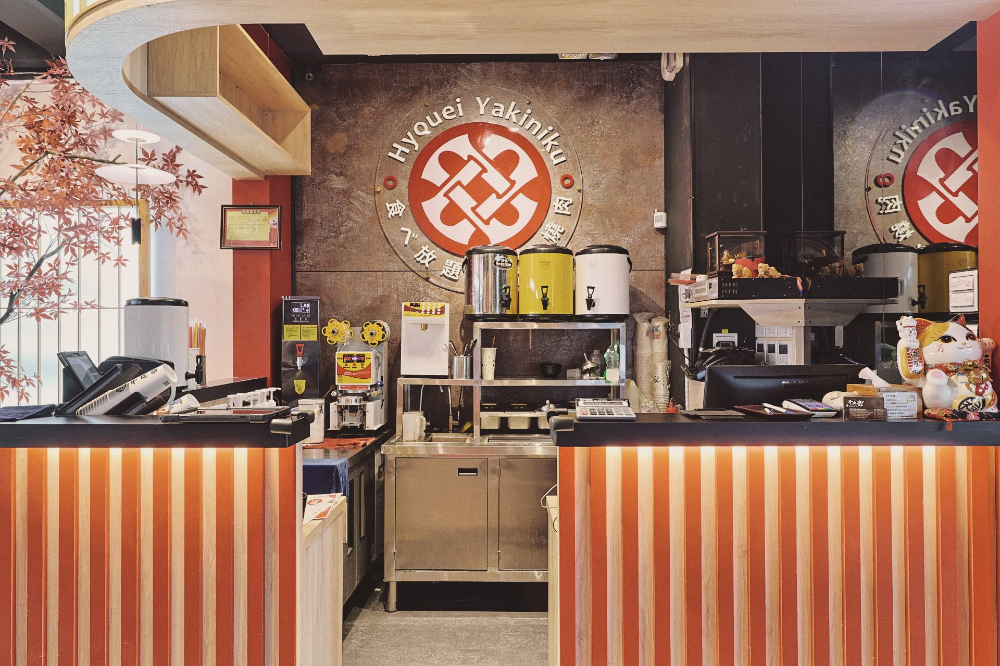
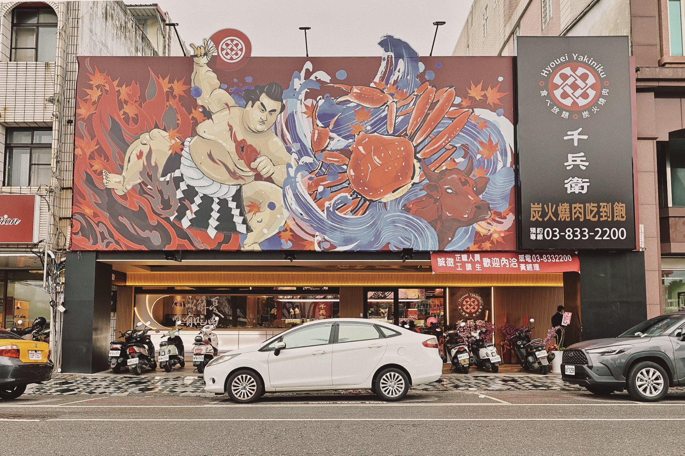
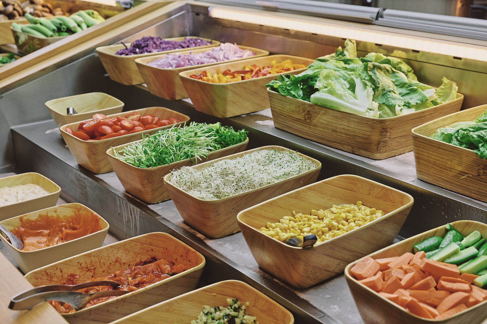
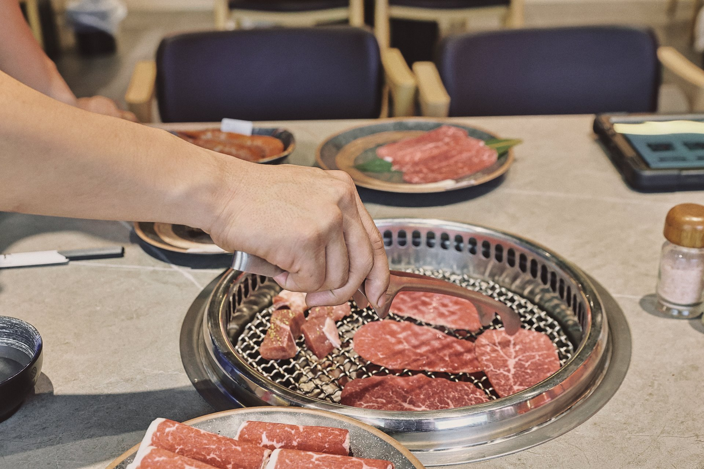
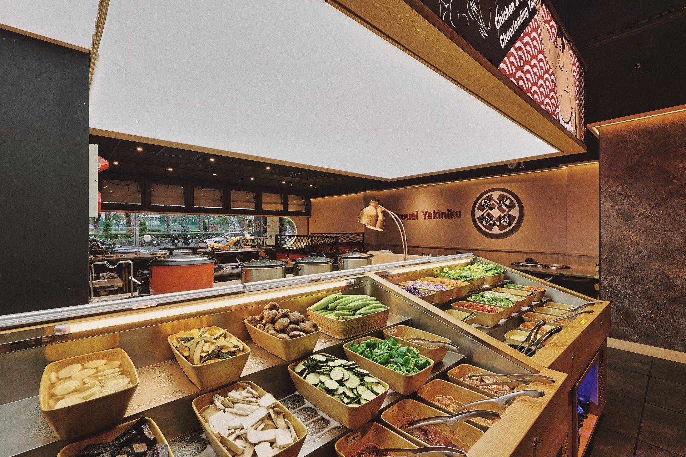
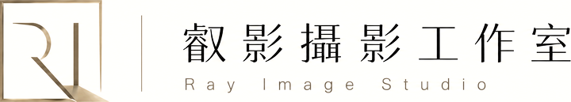
Restaurant & Cafe Works
從店內空間、座位、吧台、餐點到品牌細節，建立能用於 Google 商家、社群、官網與廣告的餐飲影像。
Selected Cases
影像不只呈現裝潢，也呈現消費情境、餐飲質感與品牌記憶。
餐飲主案例
從外觀、座位、櫃台、取餐區到餐桌情境，完整呈現餐飲品牌的空間氛圍與消費體驗。






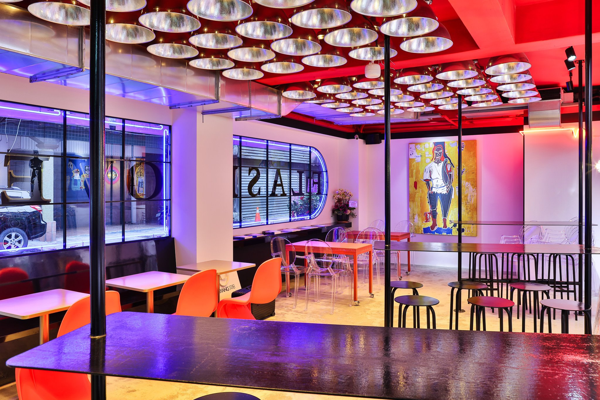
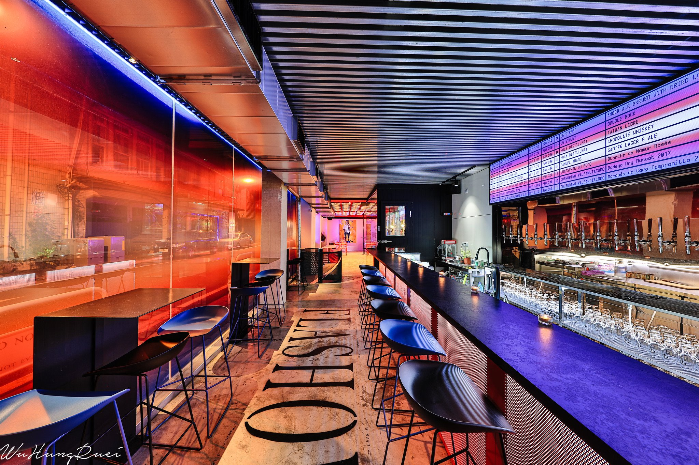
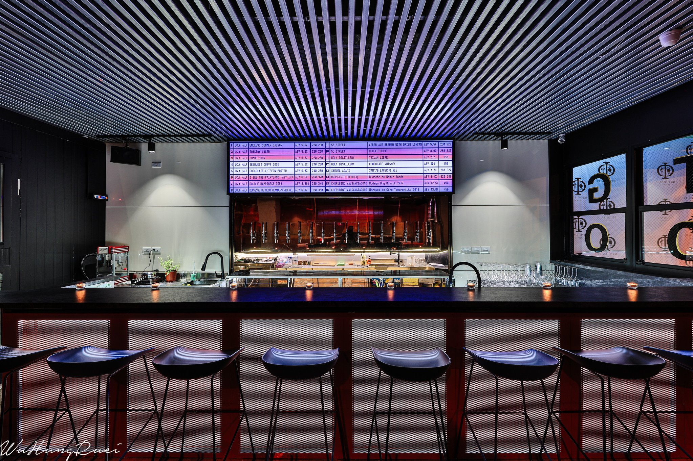
強烈燈光、飲品情境與夜間外觀，適合建立鮮明的社群與品牌形象。
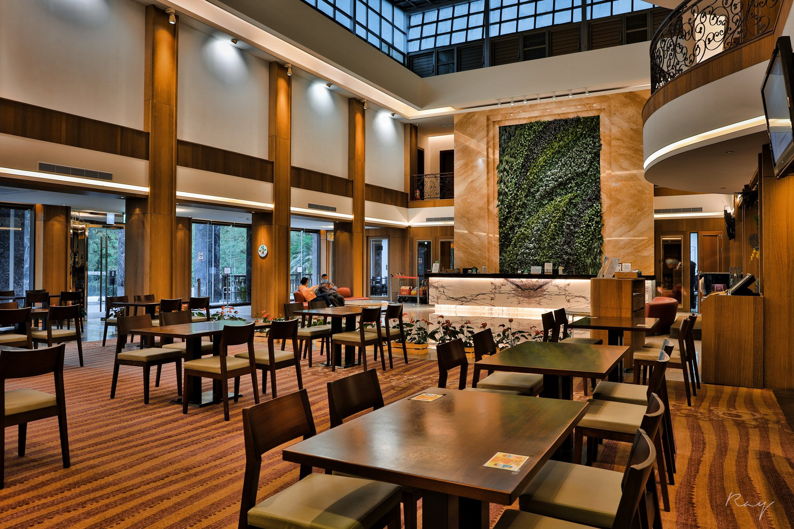
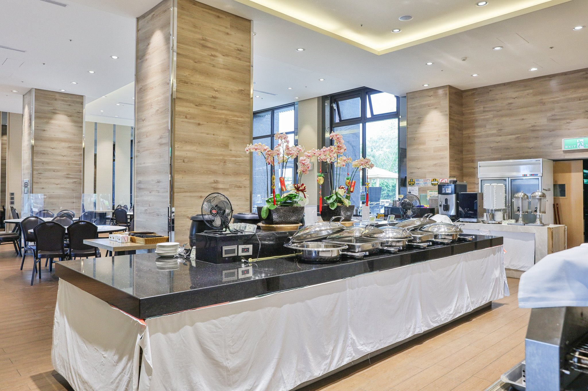
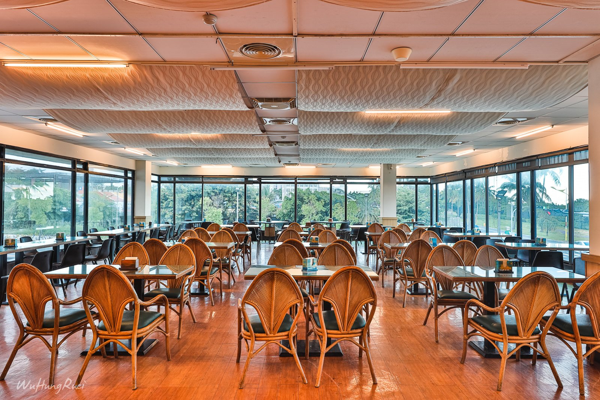
從旅宿案場延伸餐飲空間，讓飯店、度假村與住宿品牌有更完整的行銷素材。
Restaurant Coverage
依照品牌官網、Google 商家、社群與廣告需求，建立可長期使用的餐飲影像素材。
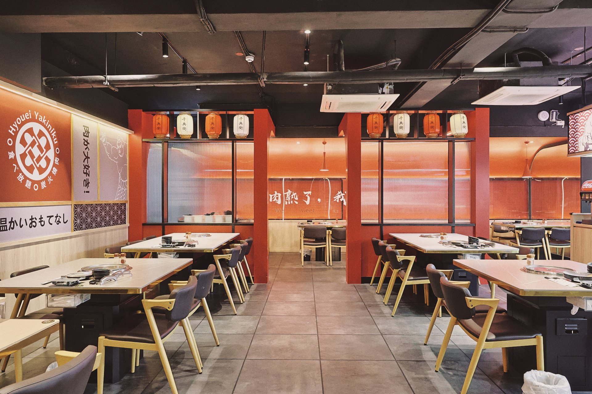
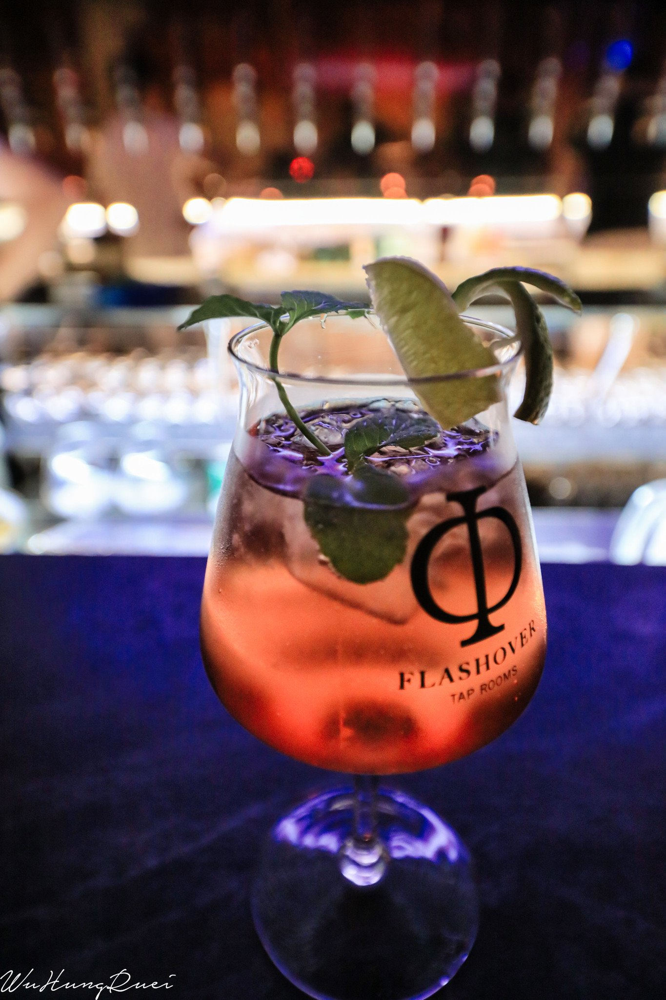
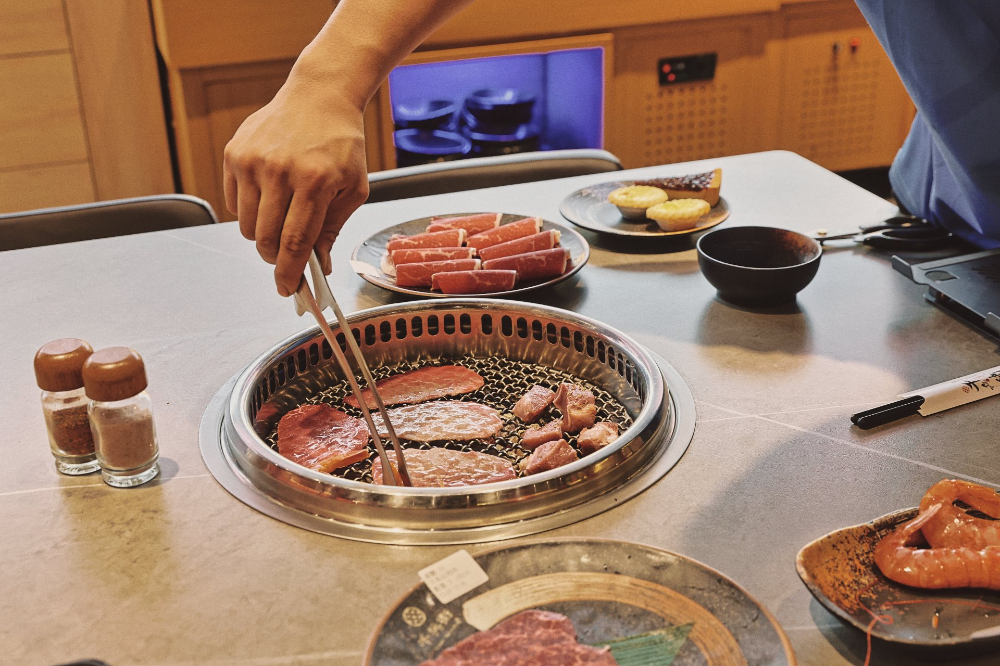